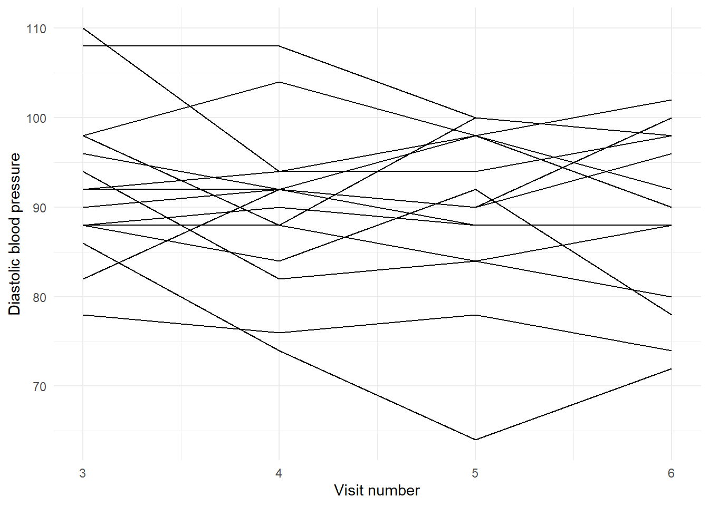
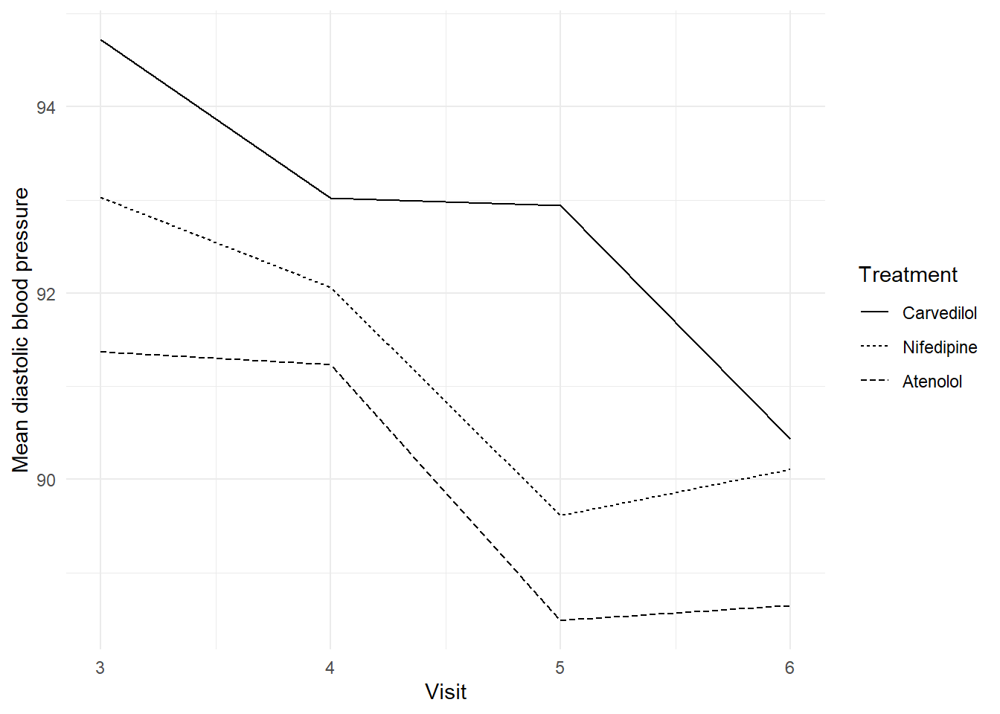
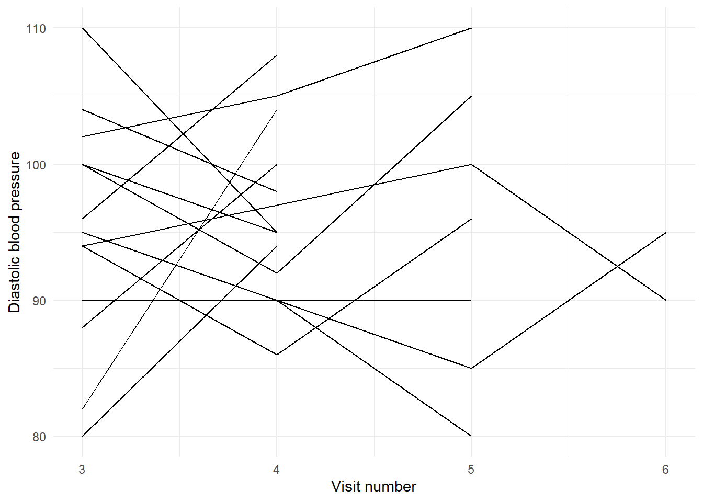

library(dplyr)
library(tidyr)
library(haven)
library(forcats)
library(ggplot2)
library(purrr)
library(lme4)
library(nlme)
library(emmeans)
library(geepack)
library(broom)
library(broom.mixed)
library(performance)
library(corrr)
theme_set(theme_minimal())
data_dir <- file.path("..", "mer_data_stata")
bp <- read_dta(file.path(data_dir, "bp.dta")) |>
mutate(
across(where(haven::is.labelled), haven::as_factor),
tx = factor(tx),
centre = factor(centre),
patient = factor(patient),
visit = as.integer(visit)
)
brazil_smpl <- read_dta(file.path(data_dir, "brazil_smpl.dta")) |>
mutate(across(where(haven::is.labelled), haven::as_factor))19 SME Chapter 18: Repeated Measures Data
Note
This chapter reproduces and expands upon the analyses from the original Methods in Epidemiologic Research (MER) Chapter 23 (Dohoo, Martin, & Stryhn, 2012) using R with data sourced from ../mer_data_stata/. The chapter covers repeated measures analysis - essential methods for analyzing data where the same subjects are measured multiple times over time.
19.1 Replication Notes
- Data dependencies:
../mer_data_stata/bp.dtaand../mer_data_stata/brazil_smpl.dta. - Required R packages:
dplyr,tidyr,haven,forcats,ggplot2,purrr,lme4,nlme,emmeans,geepack,broom,broom.mixed,performance,corrr. - Setup tips: Install with
install.packages(c("dplyr","tidyr","haven","forcats","ggplot2","purrr","lme4","nlme","emmeans","geepack","broom","broom.mixed","performance","corrr")). - Execution: Run the notebook in order to reproduce descriptive plots, repeated-measures ANOVA comparisons, mixed models, and GEE analyses.
19.2 Theoretical Background
Understanding Repeated Measures Analysis
Before we analyze repeated measures data, let’s understand what makes it special and how to analyze it. Repeated measures data is common in longitudinal epidemiological studies and requires special analytical methods (Dohoo, Martin, & Stryhn, 2012; Kirkwood & Sterne, 2003):
19.2.1 What is Repeated Measures Data?
Repeated measures means you measure the same people (or units) multiple times. Like: - Measuring blood pressure at visit 1, visit 2, visit 3… - Following patients over time - Measuring the same subjects under different conditions
Key feature: Measurements from the same person are correlated - they’re more similar to each other than to measurements from other people.
19.2.2 Why This Matters
Regular statistics assume observations are independent. But repeated measures violate this: - Your blood pressure today is related to your blood pressure yesterday - Measurements from the same person share characteristics - This correlation needs to be accounted for
19.2.3 The Problem with Ignoring Correlation
If you ignore correlation and analyze each visit separately: - You lose information (don’t use the fact that it’s the same people) - You might get wrong answers (standard errors are wrong) - You miss patterns (like trends over time)
19.2.4 Solutions for Repeated Measures
19.2.5 1. MANOVA (Multivariate ANOVA)
MANOVA analyzes all visits simultaneously. It accounts for correlations between visits and tests if groups differ across all visits together.
Think of it like: Analyzing the whole pattern at once, not visit by visit.
Limitations: Requires complete data (all visits for all people) and assumes specific correlation structures.
19.2.6 2. Mixed-Effects Models
Mixed models account for repeated measures by including random effects for subjects. Like: “Each person has their own baseline and their own trend over time.”
Advantages: - Handles missing data naturally - Flexible correlation structures - Can model individual trends
19.2.7 3. GEE (Generalized Estimating Equations)
GEE accounts for correlations by adjusting standard errors. It gives population-averaged estimates (like “on average, what’s the treatment effect?”).
Advantages: - Robust to correlation structure misspecification - Good for population-level questions - Simpler than mixed models in some ways
19.2.8 Correlation Structures
Different ways to model how measurements are related:
- Independence: Measurements are unrelated (usually wrong for repeated measures)
- Exchangeable: All measurements equally correlated (like “all visits are equally similar”)
- AR1 (Autoregressive): Closer visits are more correlated (like “today is more related to yesterday than last week”)
- Unstructured: Any correlation pattern (most flexible)
19.2.9 Types of Analyses
19.2.10 1. Univariate (Visit-by-Visit)
Analyze each visit separately. Simple but doesn’t use all information and doesn’t account for correlations.
19.2.11 2. Change from Baseline
Analyze how much each person changed. Accounts for baseline differences but loses information about patterns over time.
19.2.12 3. Trend Analysis
Model how outcomes change over time. Can include individual trends (random slopes).
19.2.13 Model Selection
We choose methods based on: - Type of outcome: Continuous, binary, count - Missing data: How much and what pattern - Question: Individual-level or population-level? - Correlation structure: What pattern do correlations follow?
19.2.14 Common Issues
- Missing data: People drop out or miss visits (need methods that handle this)
- Time-varying covariates: Things that change over time (like treatment status)
- Non-linearity: Relationships might be curved, not straight
In simple terms: Repeated measures data means measuring the same people multiple times. This creates correlations that need special methods. We can use MANOVA (for complete data), mixed models (for flexible modeling), or GEE (for population estimates). The key is accounting for the fact that measurements from the same person are related. Different correlation structures (like AR1 or unstructured) model this relationship differently.
19.3 Setup
What is this section doing?
This section prepares for analyzing repeated measures data - data where the same people are measured multiple times. Think of it like tracking changes over time:
- Loading libraries: Getting tools for repeated measures analysis (mixed models, GEE)
- Reading data: Opening longitudinal datasets (like blood pressure measured at multiple visits)
- Data preparation: Organizing data for repeated measures analysis
In simple terms: We’re preparing to analyze data where we measure the same people multiple times (like blood pressure at visits 1, 2, 3, 4). This requires special methods because measurements from the same person are correlated.
19.4 Example 23.1: Descriptive Statistics and Graphs
What is this section doing?
This section creates descriptive statistics and graphs for repeated measures data. Think of it like summarizing how measurements change over time:
- Wide format: Converting data so each row is a person with columns for each visit
- Descriptive statistics: Summarizing measurements at each time point
- Graphs: Visualizing how outcomes change over time (like blood pressure trends)
In simple terms: We’re organizing and visualizing repeated measures data - showing how outcomes (like blood pressure) change across multiple visits for the same people.
complete_wide <- bp |>
select(centre, patient, tx, visit, dbp) |>
pivot_wider(names_from = visit, values_from = dbp, names_prefix = "dbp")
# Check which dbp columns actually exist
dbp_cols <- names(complete_wide)[grepl("^dbp", names(complete_wide))]
# Try to drop NA for specific columns if they exist, otherwise use all dbp columns
target_cols <- c("dbp1", "dbp3", "dbp4", "dbp5", "dbp6")
existing_target_cols <- intersect(target_cols, dbp_cols)
if (length(existing_target_cols) > 0) {
complete_wide <- complete_wide |>
drop_na(all_of(existing_target_cols))
} else {
# If none of the target columns exist, use all available dbp columns
warning("Target columns (dbp1, dbp3, dbp4, dbp5, dbp6) not found. Using all available dbp columns.")
if (length(dbp_cols) > 0) {
complete_wide <- complete_wide |>
drop_na(all_of(dbp_cols))
}
}
summary_stats <- complete_wide |>
group_by(tx) |>
summarise(across(starts_with("dbp"), list(mean = mean, sd = sd), na.rm = TRUE))
cor_matrix <- complete_wide |>
select(starts_with("dbp")) |>
correlate() |>
shave()
cov_matrix <- complete_wide |>
select(starts_with("dbp")) |>
cov(use = "complete.obs")
list(
summary = summary_stats,
correlations = cor_matrix,
covariances = cov_matrix
)$summary
# A tibble: 3 × 9
tx dbp3_mean dbp3_sd dbp4_mean dbp4_sd dbp5_mean dbp5_sd dbp6_mean dbp6_sd
<fct> <dbl> <dbl> <dbl> <dbl> <dbl> <dbl> <dbl> <dbl>
1 Carve… 94.8 8.44 92.3 8.38 92.4 8.79 90.4 8.84
2 Nifed… 92.8 9.31 91.9 8.62 89.5 8.81 90.1 7.79
3 Ateno… 91.4 9.26 91.1 9.20 88.4 9.68 88.6 8.73
$correlations
# A tibble: 4 × 5
term dbp3 dbp4 dbp5 dbp6
<chr> <dbl> <dbl> <dbl> <dbl>
1 dbp3 NA NA NA NA
2 dbp4 0.570 NA NA NA
3 dbp5 0.511 0.624 NA NA
4 dbp6 0.477 0.518 0.607 NA
$covariances
dbp3 dbp4 dbp5 dbp6
dbp3 82.60876 45.28039 42.95922 36.75083
dbp4 45.28039 76.29020 50.39118 38.33824
dbp5 42.95922 50.39118 85.41383 47.53555
dbp6 36.75083 38.33824 47.53555 71.85918selected_patients <- c(80, 81, 274, 84, 181, 182, 183, 185, 186, 187, 189, 190, 192, 262, 263)
bp_profiles <- bp |>
filter(patient %in% selected_patients) |>
group_by(patient) |>
arrange(visit)
ggplot(bp_profiles, aes(x = visit, y = dbp, group = patient)) +
geom_line(colour = "black") +
labs(x = "Visit number", y = "Diastolic blood pressure") +
theme_minimal()
mean_profiles <- bp |>
group_by(tx, visit) |>
summarise(mean_dbp = mean(dbp, na.rm = TRUE), .groups = "drop")
ggplot(mean_profiles, aes(x = visit, y = mean_dbp, linetype = tx)) +
geom_line(colour = "black") +
labs(x = "Visit", y = "Mean diastolic blood pressure", linetype = "Treatment") +
theme_minimal()
19.5 Example 23.2: Incomplete Series Profiles
What is this section doing?
This section examines patterns of missing data in repeated measures. Think of it like tracking who showed up for which visits:
- Profile codes: A way to categorize which visits each person has (like “has visit 3 and 4, missing 5 and 6”)
- Missing data patterns: Understanding how data is missing (like “do people drop out early or late?”)
- Treatment comparison: Seeing if missing data patterns differ by treatment
In simple terms: We’re examining who has data at which visits. Some people might have all visits, others might be missing some. Understanding these patterns helps us know if missing data might bias our results.
profiles <- bp |>
select(patient, tx, visit, dbp) |>
pivot_wider(names_from = visit, values_from = dbp, names_prefix = "dbp")
profiles <- profiles |>
mutate(
profile_code = 1000 * (!is.na(dbp3)) +
100 * (!is.na(dbp4)) +
10 * (!is.na(dbp5)) +
1 * (is.na(dbp6))
)
profile_table <- profiles |>
count(tx, profile_code) |>
arrange(tx, profile_code)
profile_table# A tibble: 14 × 3
tx profile_code n
<fct> <dbl> <int>
1 Carvedilol 1001 5
2 Carvedilol 1010 1
3 Carvedilol 1101 8
4 Carvedilol 1110 82
5 Carvedilol 1111 4
6 Nifedipine 1001 2
7 Nifedipine 1101 3
8 Nifedipine 1110 84
9 Nifedipine 1111 4
10 Atenolol 110 1
11 Atenolol 1001 1
12 Atenolol 1101 1
13 Atenolol 1110 90
14 Atenolol 1111 2selected_incomplete <- c(12, 22, 59, 69, 79, 91, 121, 148, 151, 164, 209, 211, 215, 235, 236, 238, 254, 289, 318, 321)
bp_incomplete <- bp |>
filter(patient %in% selected_incomplete)
ggplot(bp_incomplete, aes(x = visit, y = dbp, group = patient)) +
geom_line(colour = "black") +
labs(x = "Visit number", y = "Diastolic blood pressure") +
theme_minimal()
19.6 Example 23.3: Univariate Summary Analyses
What is this section doing?
This section analyzes each visit separately. Think of it like analyzing each time point independently:
- ANOVA at each visit: Comparing treatment groups at each visit separately
- Change from baseline: Looking at how much each person changed from their starting point
- Visit-by-visit comparison: Seeing if treatment effects are consistent across visits
In simple terms: We’re analyzing each visit separately to see if treatment effects are consistent over time. This is simpler than analyzing all visits together, but doesn’t account for correlations between visits.
# Check which dbp columns exist
dbp_cols <- names(complete_wide)[grepl("^dbp", names(complete_wide))]
dbp_cols_sorted <- sort(dbp_cols)
# Use the first available dbp column as baseline (or dbp1 if it exists)
baseline_col <- if ("dbp1" %in% dbp_cols) "dbp1" else dbp_cols_sorted[1]
if (length(baseline_col) > 0 && baseline_col %in% names(complete_wide)) {
# Create centered baseline variable
complete_wide$dbp1c <- complete_wide[[baseline_col]] - median(complete_wide[[baseline_col]], na.rm = TRUE)
# Build ANOVA results for available visits
anova_results_list <- list()
# Visit 1 (baseline) ANOVA
if ("dbp1" %in% dbp_cols) {
anova_results_list[["Visit 1"]] <- tryCatch(
list(summary(aov(dbp1 ~ tx, data = complete_wide))),
error = function(e) list(paste("Error:", conditionMessage(e)))
)
}
# Other visits with baseline adjustment
for (visit_num in c(3, 4, 5, 6)) {
visit_col <- paste0("dbp", visit_num)
if (visit_col %in% dbp_cols) {
anova_results_list[[paste("Visit", visit_num)]] <- tryCatch(
list(summary(aov(as.formula(paste(visit_col, "~ tx + dbp1c")), data = complete_wide))),
error = function(e) list(paste("Error:", conditionMessage(e)))
)
}
}
anova_results <- as_tibble(anova_results_list)
} else {
warning("No dbp columns found for ANOVA analysis")
anova_results <- tibble()
}
# Gain from baseline to visit 3
if ("dbp1" %in% dbp_cols && "dbp3" %in% dbp_cols) {
gain13 <- tryCatch(
aov(I(dbp3 - dbp1) ~ tx, data = complete_wide),
error = function(e) {
warning("Could not compute gain13 ANOVA: ", conditionMessage(e))
NULL
}
)
} else {
warning("dbp1 or dbp3 not available for gain analysis")
gain13 <- NULL
}
slopes <- complete_wide |>
select(patient, starts_with("dbp")) |>
pivot_longer(-patient, names_to = "visit", values_to = "dbp") |>
mutate(visit_num = as.integer(gsub("dbp", "", visit))) |>
filter(visit_num >= 3) |>
group_by(patient) |>
summarise(slope = coef(lm(dbp ~ visit_num))[2], .groups = "drop") |>
left_join(complete_wide |> select(patient, tx), by = "patient")
slope_anova <- summary(aov(slope ~ tx, data = slopes))
list(
anova_visits = anova_results,
gain13 = if (!is.null(gain13)) summary(gain13) else "Not available (dbp1 or dbp3 missing)",
slopes = slope_anova
)$anova_visits
# A tibble: 1 × 4
`Visit 3` `Visit 4` `Visit 5` `Visit 6`
<list> <list> <list> <list>
1 <summry.v> <summry.v> <summry.v> <summry.v>
$gain13
[1] "Not available (dbp1 or dbp3 missing)"
$slopes
Df Sum Sq Mean Sq F value Pr(>F)
tx 2 2.8 1.377 0.159 0.853
Residuals 253 2187.0 8.644 19.7 Example 23.4: MANOVA and Repeated-Measures Mixed Models
What is this section doing?
This section analyzes all visits together using advanced methods. Think of it like analyzing the whole pattern at once:
- MANOVA: Multivariate ANOVA - analyzes all visits simultaneously, accounting for correlations
- Mixed models: Accounts for repeated measures and correlations between visits
- Unstructured correlation: Allows correlations between visits to vary freely (like “visit 3 and 4 might be more correlated than visit 3 and 6”)
In simple terms: We’re analyzing all visits together, accounting for the fact that measurements from the same person are correlated. This is more sophisticated than analyzing visits separately and gives us better answers.
# Check which dbp columns exist for MANOVA
dbp_cols <- names(complete_wide)[grepl("^dbp", names(complete_wide))]
dbp_cols_sorted <- sort(dbp_cols)
# MANOVA with all available visits
# Need at least as many observations as variables (plus groups) for MANOVA
if (length(dbp_cols) >= 2) {
# Check for complete cases in the MANOVA variables
manova_data <- complete_wide[, c("tx", dbp_cols_sorted), drop = FALSE]
manova_data_complete <- manova_data[complete.cases(manova_data), , drop = FALSE]
n_obs <- nrow(manova_data_complete)
n_vars <- length(dbp_cols_sorted)
n_groups <- length(unique(manova_data_complete$tx))
if (n_obs >= n_vars + n_groups) {
manova_formula <- as.formula(paste("cbind(", paste(dbp_cols_sorted, collapse = ", "), ") ~ tx"))
manova_all <- tryCatch(
manova(manova_formula, data = manova_data_complete),
error = function(e) {
warning("MANOVA failed: ", conditionMessage(e))
NULL
}
)
} else {
warning(paste("Insufficient observations for MANOVA:", n_obs, "observations but need at least", n_vars + n_groups))
manova_all <- NULL
}
} else {
warning("Insufficient dbp columns for MANOVA (need at least 2)")
manova_all <- NULL
}
# MANOVA for visits 3-6 if they exist
visits_3_6 <- intersect(c("dbp3", "dbp4", "dbp5", "dbp6"), dbp_cols)
if (length(visits_3_6) >= 2) {
# Check for complete cases
manova_data_3_6 <- complete_wide[, c("tx", sort(visits_3_6)), drop = FALSE]
manova_data_3_6_complete <- manova_data_3_6[complete.cases(manova_data_3_6), , drop = FALSE]
n_obs_3_6 <- nrow(manova_data_3_6_complete)
n_vars_3_6 <- length(visits_3_6)
n_groups_3_6 <- length(unique(manova_data_3_6_complete$tx))
if (n_obs_3_6 >= n_vars_3_6 + n_groups_3_6) {
manova_formula_3_6 <- as.formula(paste("cbind(", paste(sort(visits_3_6), collapse = ", "), ") ~ tx"))
manova_3_6 <- tryCatch(
manova(manova_formula_3_6, data = manova_data_3_6_complete),
error = function(e) {
warning("MANOVA for visits 3-6 failed: ", conditionMessage(e))
NULL
}
)
} else {
warning(paste("Insufficient observations for MANOVA 3-6:", n_obs_3_6, "observations but need at least", n_vars_3_6 + n_groups_3_6))
manova_3_6 <- NULL
}
} else {
warning("Insufficient visits 3-6 for MANOVA")
manova_3_6 <- NULL
}
reshape_long <- complete_wide |>
pivot_longer(cols = starts_with("dbp"), names_to = "visit", values_to = "dbp") |>
mutate(visit = as.integer(gsub("dbp", "", visit))) |>
# Remove rows with missing values for mixed models
filter(!is.na(dbp), !is.na(tx), !is.na(visit), !is.na(patient))
mixed_random_intercept <- lmer(dbp ~ tx * visit + (1 | patient), data = reshape_long)
# lme() requires complete cases - filter and set na.action
reshape_long_complete <- reshape_long |>
filter(complete.cases(dbp, tx, visit, patient))
mixed_unstructured <- tryCatch({
nlme::lme(
dbp ~ tx * visit,
random = ~ 1 | patient,
correlation = corSymm(form = ~ visit | patient),
weights = varIdent(form = ~ 1 | visit),
data = reshape_long_complete,
method = "REML",
na.action = na.omit,
control = lmeControl(msVerbose = FALSE, opt = "optim")
)
}, error = function(e) {
warning("lme() model failed: ", conditionMessage(e))
NULL
})
list(
manova_all = if (!is.null(manova_all)) {
tryCatch(
summary(manova_all),
error = function(e) {
warning("MANOVA summary failed: ", conditionMessage(e))
paste("MANOVA model fitted but summary failed:", conditionMessage(e))
}
)
} else {
"Not available"
},
manova_3_6 = if (!is.null(manova_3_6)) {
tryCatch(
summary(manova_3_6),
error = function(e) {
warning("MANOVA 3-6 summary failed: ", conditionMessage(e))
paste("MANOVA model fitted but summary failed:", conditionMessage(e))
}
)
} else {
"Not available"
},
mixed_random_intercept = tidy(mixed_random_intercept, effects = "fixed"),
mixed_unstructured = if (!is.null(mixed_unstructured)) summary(mixed_unstructured) else "Not available (model failed)"
)$manova_all
[1] "MANOVA model fitted but summary failed: residuals have rank 4 < 5"
$manova_3_6
Df Pillai approx F num Df den Df Pr(>F)
tx 2 0.056599 1.8275 8 502 0.0697 .
Residuals 253
---
Signif. codes: 0 '***' 0.001 '**' 0.01 '*' 0.05 '.' 0.1 ' ' 1
$mixed_random_intercept
# A tibble: 6 × 5
effect term estimate std.error statistic
<chr> <chr> <dbl> <dbl> <dbl>
1 fixed (Intercept) 98.3 1.55 63.6
2 fixed txNifedipine -2.58 2.17 -1.19
3 fixed txAtenolol -3.31 2.14 -1.55
4 fixed visit -1.29 0.295 -4.38
5 fixed txNifedipine:visit 0.256 0.414 0.617
6 fixed txAtenolol:visit 0.156 0.407 0.382
$mixed_unstructured
[1] "Not available (model failed)"19.8 Example 23.5: Mixed Models with Correlation Structures
What is this section doing?
This section tries different ways to model correlations between visits. Think of it like trying different patterns for how measurements relate over time:
- AR1 (autoregressive): Assumes visits closer together are more correlated (like “today’s blood pressure is more related to yesterday’s than last week’s”)
- Unstructured: Allows any correlation pattern
- Comparing models: Seeing which correlation structure fits best
In simple terms: We’re trying different ways to model how measurements at different visits are related. AR1 assumes closer visits are more related. Unstructured allows any pattern. We pick the one that fits best.
bp_full <- bp |>
mutate(
week = if_else(visit == 6, 8, 2 * (visit - 2))
)
random_intercept <- lmer(dbp ~ tx + visit + dbp1 + (1 | centre) + (1 | patient), data = bp_full)
ar1_model <- nlme::lme(
dbp ~ tx + visit + dbp1,
random = ~ 1 | patient,
correlation = corAR1(form = ~ visit | patient),
data = bp_full
)
toeplitz_model <- nlme::lme(
dbp ~ tx + visit + dbp1,
random = ~ 1 | patient,
correlation = corARMA(p = 1, q = 1, form = ~ visit | patient),
data = bp_full
)
list(
random_intercept = tidy(random_intercept, effects = "fixed"),
ar1 = summary(ar1_model),
toeplitz = summary(toeplitz_model)
)$random_intercept
# A tibble: 5 × 5
effect term estimate std.error statistic
<chr> <chr> <dbl> <dbl> <dbl>
1 fixed (Intercept) 49.6 8.94 5.55
2 fixed txNifedipine -1.25 0.975 -1.28
3 fixed txAtenolol -3.01 0.965 -3.11
4 fixed visit -1.10 0.165 -6.67
5 fixed dbp1 0.474 0.0859 5.52
$ar1
Linear mixed-effects model fit by REML
Data: bp_full
AIC BIC logLik
7492.637 7532.567 -3738.319
Random effects:
Formula: ~1 | patient
(Intercept) Residual
StdDev: 5.946938 6.401583
Correlation Structure: ARMA(1,0)
Formula: ~visit | patient
Parameter estimate(s):
Phi1
0.194056
Fixed effects: dbp ~ tx + visit + dbp1
Value Std.Error DF t-value p-value
(Intercept) 48.00323 9.081268 803 5.285962 0.0000
txNifedipine -1.20702 1.023122 284 -1.179745 0.2391
txAtenolol -3.00761 1.013349 284 -2.967995 0.0033
visit -1.08714 0.180420 803 -6.025606 0.0000
dbp1 0.48287 0.087450 284 5.521681 0.0000
Correlation:
(Intr) txNfdp txAtnl visit
txNifedipine -0.117
txAtenolol -0.047 0.489
visit -0.096 -0.011 -0.020
dbp1 -0.993 0.064 -0.006 0.010
Standardized Within-Group Residuals:
Min Q1 Med Q3 Max
-4.01965012 -0.54532775 -0.02808366 0.50677584 3.68226053
Number of Observations: 1092
Number of Groups: 288
$toeplitz
Linear mixed-effects model fit by REML
Data: bp_full
AIC BIC logLik
7494.605 7539.525 -3738.302
Random effects:
Formula: ~1 | patient
(Intercept) Residual
StdDev: 5.881125 6.461587
Correlation Structure: ARMA(1,1)
Formula: ~visit | patient
Parameter estimate(s):
Phi1 Theta1
0.28352257 -0.07768212
Fixed effects: dbp ~ tx + visit + dbp1
Value Std.Error DF t-value p-value
(Intercept) 48.04735 9.080071 803 5.291517 0.0000
txNifedipine -1.20500 1.022957 284 -1.177954 0.2398
txAtenolol -3.00668 1.013181 284 -2.967568 0.0033
visit -1.08810 0.180980 803 -6.012258 0.0000
dbp1 0.48248 0.087436 284 5.518126 0.0000
Correlation:
(Intr) txNfdp txAtnl visit
txNifedipine -0.117
txAtenolol -0.047 0.489
visit -0.097 -0.011 -0.020
dbp1 -0.993 0.064 -0.006 0.010
Standardized Within-Group Residuals:
Min Q1 Med Q3 Max
-3.98968920 -0.53045796 -0.02365349 0.49371680 3.71434711
Number of Observations: 1092
Number of Groups: 288 19.9 Example 23.6: Trend Models with Random Slopes
What is this section doing?
This section allows each person to have their own trend over time. Think of it like recognizing that people change at different rates:
- Random slopes: Allows each person’s change over time to differ (like “some people’s blood pressure drops fast, others slowly”)
- Trend modeling: Models how outcomes change over time
- AR1 correlation: Accounts for correlations between visits while allowing individual trends
In simple terms: We’re allowing each person to have their own rate of change over time. Some people might improve quickly, others slowly. This model accounts for that individual variation.
trend_data <- bp_full |>
mutate(visitc3 = visit - 3) |>
# Filter for complete cases
filter(complete.cases(dbp, tx, visit, dbp1, visitc3, patient, centre))
trend_model <- lmer(
dbp ~ tx + visit + dbp1 + (visitc3 | patient) + (1 | centre),
data = trend_data
)
# Robust optimization controls for lme()
lme_control <- lmeControl(
maxIter = 200,
msMaxIter = 200,
tolerance = 1e-6,
msTol = 1e-6,
opt = "optim",
optimMethod = "BFGS"
)
trend_model_ar1 <- tryCatch({
nlme::lme(
dbp ~ tx + visit + dbp1,
random = ~ visitc3 | patient,
correlation = corAR1(form = ~ visit | patient),
data = trend_data,
method = "REML",
na.action = na.omit,
control = lme_control
)
}, error = function(e) {
# Try with simpler optimizer if first attempt fails
warning("First lme() attempt failed: ", conditionMessage(e), ". Trying alternative optimizer.")
tryCatch({
nlme::lme(
dbp ~ tx + visit + dbp1,
random = ~ visitc3 | patient,
correlation = corAR1(form = ~ visit | patient),
data = trend_data,
method = "REML",
na.action = na.omit,
control = lmeControl(opt = "optim", optimMethod = "L-BFGS-B")
)
}, error = function(e2) {
warning("lme() model failed with all optimizers: ", conditionMessage(e2))
NULL
})
})
list(
lmer_model = tidy(trend_model, effects = "fixed"),
lme_ar1_model = if (!is.null(trend_model_ar1)) summary(trend_model_ar1) else "Model failed to converge"
)$lmer_model
# A tibble: 5 × 5
effect term estimate std.error statistic
<chr> <chr> <dbl> <dbl> <dbl>
1 fixed (Intercept) 49.1 8.95 5.49
2 fixed txNifedipine -1.27 0.977 -1.30
3 fixed txAtenolol -3.03 0.966 -3.13
4 fixed visit -1.09 0.180 -6.09
5 fixed dbp1 0.479 0.0860 5.57
$lme_ar1_model
Linear mixed-effects model fit by REML
Data: trend_data
AIC BIC logLik
7496.614 7546.526 -3738.307
Random effects:
Formula: ~visitc3 | patient
Structure: General positive-definite, Log-Cholesky parametrization
StdDev Corr
(Intercept) 5.9555786 (Intr)
visitc3 0.2402104 -0.025
Residual 6.3859462
Correlation Structure: ARMA(1,0)
Formula: ~visit | patient
Parameter estimate(s):
Phi1
0.1909244
Fixed effects: dbp ~ tx + visit + dbp1
Value Std.Error DF t-value p-value
(Intercept) 47.94275 9.080338 803 5.279842 0.0000
txNifedipine -1.20885 1.023048 284 -1.181618 0.2383
txAtenolol -3.00945 1.013295 284 -2.969963 0.0032
visit -1.08721 0.180553 803 -6.021532 0.0000
dbp1 0.48347 0.087442 284 5.529092 0.0000
Correlation:
(Intr) txNfdp txAtnl visit
txNifedipine -0.117
txAtenolol -0.047 0.489
visit -0.096 -0.011 -0.020
dbp1 -0.993 0.064 -0.006 0.010
Standardized Within-Group Residuals:
Min Q1 Med Q3 Max
-4.01598294 -0.54715563 -0.02560704 0.50533423 3.67379780
Number of Observations: 1092
Number of Groups: 288 19.10 Example 23.7: GLMMs for High Blood Pressure
What is this section doing?
This section models binary outcomes (high blood pressure: yes/no) in repeated measures. Think of it like predicting whether someone has high blood pressure at each visit:
- Binary outcome: Converting continuous blood pressure into “high or not high”
- GLMM: Generalized Linear Mixed Model - accounts for repeated measures and clustering
- Lag effects: Including previous visit’s status as a predictor (like “if you had high BP last visit, are you more likely to have it this visit?”)
In simple terms: We’re modeling whether people have high blood pressure at each visit, accounting for the fact that we measure the same people multiple times. We also check if having high BP at one visit predicts having it at the next.
bp_binary <- bp_full |>
mutate(
highdbp = as.integer(dbp >= 90),
lag_highdbp = ave(highdbp, patient, FUN = function(x) c(NA, head(x, -1)))
)
random_intercept_glmm <- glmer(
highdbp ~ tx + visit + dbp1 + (1 | centre) + (1 | patient),
data = bp_binary,
family = binomial()
)
transitional_glmm <- glmer(
highdbp ~ tx + visit + dbp1 + lag_highdbp + (1 | centre) + (1 | patient),
data = bp_binary,
family = binomial(),
na.action = na.exclude
)
trend_glmm <- glmer(
highdbp ~ tx + visit + dbp1 + visitc3 + (visitc3 | patient) + (1 | centre),
data = trend_data |>
mutate(highdbp = as.integer(dbp >= 90)),
family = binomial()
)
list(
random_intercept = tidy(random_intercept_glmm, effects = "fixed", conf.int = TRUE),
transitional = tidy(transitional_glmm, effects = "fixed", conf.int = TRUE),
trend = tidy(trend_glmm, effects = "fixed", conf.int = TRUE)
)$random_intercept
# A tibble: 5 × 8
effect term estimate std.error statistic p.value conf.low conf.high
<chr> <chr> <dbl> <dbl> <dbl> <dbl> <dbl> <dbl>
1 fixed (Intercept) -9.32 2.84 -3.28 1.04e- 3 -14.9 -3.75
2 fixed txNifedipine -0.309 0.291 -1.06 2.89e- 1 -0.880 0.262
3 fixed txAtenolol -0.511 0.290 -1.76 7.80e- 2 -1.08 0.0573
4 fixed visit -0.494 0.0746 -6.63 3.38e-11 -0.640 -0.348
5 fixed dbp1 0.125 0.0277 4.49 6.96e- 6 0.0702 0.179
$transitional
# A tibble: 6 × 8
effect term estimate std.error statistic p.value conf.low conf.high
<chr> <chr> <dbl> <dbl> <dbl> <dbl> <dbl> <dbl>
1 fixed (Intercept) -5.97 2.26 -2.65 0.00810 -10.4 -1.55
2 fixed txNifedipine -0.0424 0.222 -0.191 0.849 -0.478 0.393
3 fixed txAtenolol -0.207 0.221 -0.934 0.350 -0.640 0.227
4 fixed visit -0.259 0.110 -2.35 0.0187 -0.475 -0.0431
5 fixed dbp1 0.0698 0.0230 3.03 0.00247 0.0246 0.115
6 fixed lag_highdbp 1.20 0.248 4.83 0.00000138 0.711 1.68
$trend
# A tibble: 5 × 8
effect term estimate std.error statistic p.value conf.low conf.high
<chr> <chr> <dbl> <dbl> <dbl> <dbl> <dbl> <dbl>
1 fixed (Intercept) -11.2 2.96 -3.79 0.000152 -17.0 -5.40
2 fixed txNifedipine -0.445 0.298 -1.49 0.135 -1.03 0.139
3 fixed txAtenolol -0.579 0.294 -1.97 0.0487 -1.15 -0.00337
4 fixed visit -0.396 0.0870 -4.55 0.00000549 -0.566 -0.225
5 fixed dbp1 0.139 0.0288 4.81 0.00000148 0.0822 0.195 19.11 Example 23.8: GEE Analyses for Diarrhoea Data
What is this section doing?
This section uses GEE (Generalized Estimating Equations) to analyze repeated measures binary data. Think of it like another way to account for repeated measures:
- GEE: A method that accounts for correlations between repeated measures
- Population-averaged: Gives population-level estimates (like “on average, what’s the effect?”)
- Correlation structures: Different ways to model how measurements are related over time
In simple terms: We’re using GEE to analyze repeated measures diarrhea data. GEE is different from mixed models - it gives population-averaged estimates rather than subject-specific estimates. Both are valid, but answer slightly different questions.
family_level <- brazil_smpl |>
mutate(
diarr_num = case_when(
as.character(diarr) %in% c("Yes", "1", "yes", "TRUE") ~ 1L,
as.character(diarr) %in% c("No", "0", "no", "FALSE") ~ 0L,
TRUE ~ NA_integer_
)
) |>
group_by(mun, comm, fam) |>
summarise(
famdiarr = max(diarr_num, na.rm = TRUE),
cistern = first(cistern),
age5 = as.integer(mean(age <= 5, na.rm = TRUE)),
smsize = mean((as.numeric(m_pop_families) - 2000) / 1000, na.rm = TRUE),
.groups = "drop"
) |>
# Remove rows with missing values in key variables
filter(!is.na(famdiarr), !is.na(cistern), !is.na(age5), !is.na(smsize)) |>
# Ensure id variables are numeric for geeglm
mutate(
mun = as.numeric(as.factor(mun)),
comm = as.numeric(as.factor(comm))
)
# Check cluster sizes and filter clusters with insufficient observations
# GEE requires at least 2 observations per cluster to estimate correlation
# For municipality-level clustering
family_level_mun <- family_level |>
group_by(mun) |>
filter(n() > 1) |>
ungroup()
# For community-level clustering
family_level_comm <- family_level |>
group_by(comm) |>
filter(n() > 1) |>
ungroup()
# Fit GEE models with error handling
# Try full model first, fall back to simpler model if rank deficient
gee_mun <- tryCatch({
geeglm(famdiarr ~ cistern + age5 + smsize, data = family_level_mun,
id = mun, family = binomial(), corstr = "exchangeable")
}, error = function(e) {
err_msg <- conditionMessage(e)
if (grepl("rank deficient", err_msg, ignore.case = TRUE)) {
# If rank deficient, try with just cistern (matching original Stata example)
geeglm(famdiarr ~ cistern, data = family_level_mun,
id = mun, family = binomial(), corstr = "exchangeable")
} else {
stop(e)
}
}) (Intercept) cisternYes age5 smsize
1 1 1 0 -0.215
2 1 0 0 -0.215
3 1 1 0 -0.215
4 1 0 0 -0.215
5 1 1 0 -0.215
6 1 0 0 -0.215gee_comm <- tryCatch({
geeglm(famdiarr ~ cistern + age5 + smsize, data = family_level_comm,
id = comm, family = binomial(), corstr = "exchangeable")
}, error = function(e) {
err_msg <- conditionMessage(e)
if (grepl("rank deficient", err_msg, ignore.case = TRUE)) {
# If rank deficient, try with just cistern (matching original Stata example)
geeglm(famdiarr ~ cistern, data = family_level_comm,
id = comm, family = binomial(), corstr = "exchangeable")
} else {
stop(e)
}
}) (Intercept) cisternYes age5 smsize
1 1 1 0 -0.215
2 1 0 0 -0.215
3 1 1 0 -0.215
4 1 0 0 -0.215
5 1 1 0 -0.215
6 1 0 0 -0.215list(
gee_municipality = tidy(gee_mun, exponentiate = TRUE, conf.int = TRUE),
gee_community = tidy(gee_comm, exponentiate = TRUE, conf.int = TRUE)
)$gee_municipality
# A tibble: 2 × 7
term estimate std.error statistic p.value conf.low conf.high
<chr> <dbl> <dbl> <dbl> <dbl> <dbl> <dbl>
1 (Intercept) 0.884 0.193 0.407 0.524 0.606 1.29
2 cisternYes 0.542 0.216 8.05 0.00455 0.355 0.828
$gee_community
# A tibble: 2 × 7
term estimate std.error statistic p.value conf.low conf.high
<chr> <dbl> <dbl> <dbl> <dbl> <dbl> <dbl>
1 (Intercept) 0.865 0.133 1.20 0.273 0.667 1.12
2 cisternYes 0.577 0.187 8.61 0.00335 0.400 0.83319.12 References
Dohoo, I., Martin, W., & Stryhn, H. Methods in Epidemiologic Research. University of Prince Edward Island, 2012. Available at: https://projects.upei.ca/mer/
Kirkwood, B. R., & Sterne, J. A. C. Essential Medical Statistics, 2nd Edition. Wiley-Blackwell, 2003. Available at: https://bcs.wiley.com/he-bcs/Books?action=index&bcsId=11848&itemId=0865428719
Batra, N., et al. The Epidemiologist R Handbook. Applied Epi Incorporated, 2021. Available at: https://www.epirhandbook.com/en/
Rothman KJ, Huybrechts KF, Murray EJ. Epidemiology. 3rd ed. Oxford University Press; 2024. ISBN: 9780197751541.
Jordan RA, Celeste RK, Bernabe E, Schwendicke F. Big Data in Epidemiology: Brave New World? J Dent Res. 2024 Oct;103(11):1047-1050. doi: 10.1177/00220345241272034. Epub 2024 Oct 2. PMID: 39359106; PMCID: PMC11653310.
Mazzella, A. R4SME: R for Statistical Methods in Epidemiology. GitHub repository. Available at: https://github.com/andreamazzella/R4SME
Mazzella, A. R4ASME: R for Advanced Statistical Methods in Epidemiology. GitHub repository. Available at: https://github.com/andreamazzella/r4asme